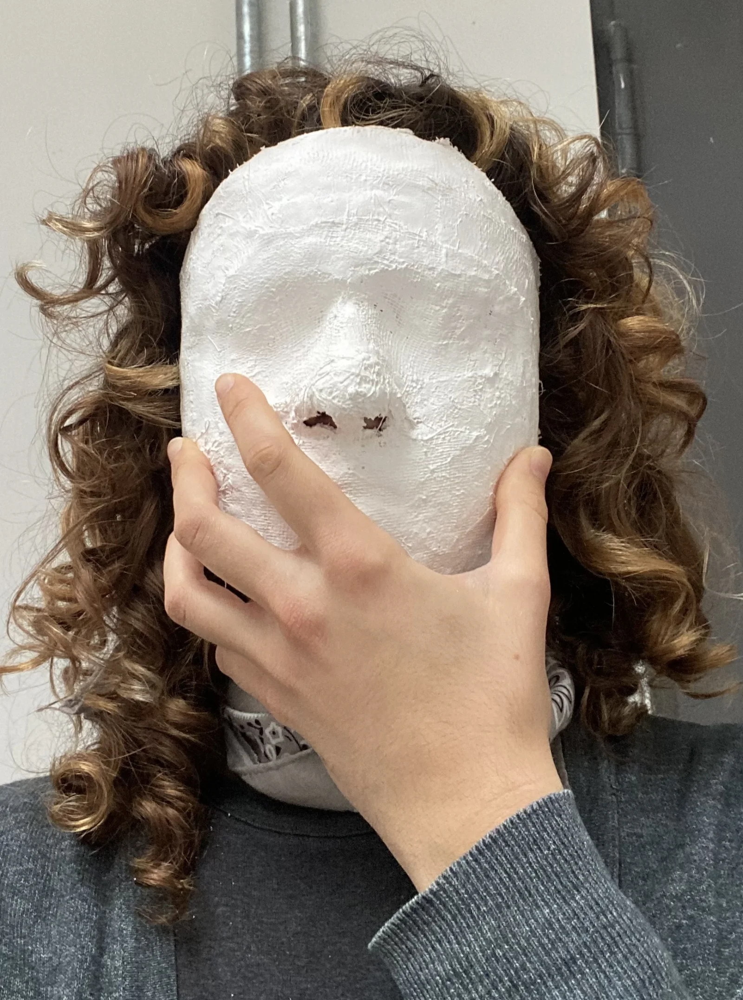

Emma de Warren (b. 1999, Reims) is a french visual artist living in Berlin since 2019. With a background in social philosophy and care ethics acquired at the University of Exeter, Emma now studies fine arts and painting at the Berlin Weißensee school of Art and Design.
Through painting, poetry and video work, she explores the emotions we inherit from our families, gender contexts and surroundings. Our sensitivity and fragility, which connects us as humans, and relates the subject and the viewer, is at the forefront of every work. A complex context surround each being and object, with associated meanings and perceptions. The subconscious plays an important role in her work, with inspiration often drawn from dreams, in an attempt to portray what often remains unspoken.

Artist CV
October-November 2026 - Obelus: "Then I know I have not lived, That depends entierely on the sieve, Do you think this number is random, Maybe, Thank god, It's a feeling", group show.
July 2026 - Kunsthochschule Berlin-Weißensee: Rundgang
July 2025 - Kunsthochschule Berlin-Weißensee: Rundgang
July 2025 - Kunsthochschule Berlin-Weißensee: Rundgang
July 2025 - Projektraum im Kunstquartier Bethanien, Berlin: Group Exhibition with students from Nader Ahriman group: Ctrl + Alt + Delete
January 2025 - Projektraum im Kunstquartier Bethanien, collaborative exhibition: Chimaera
December 2024 - Obelus Foster Str., Solo exhibition: I get to choose which way the buckle of my belt faces
December 2024 - Foyer of the Kunsthochschule Berlin-Weißensee, group exhibition: Gender, Body and Sexuality
November 2024 - Treptower Arena, Art Market: BAAM
July 2024 - Kunsthochschule Berlin-Weißensee: Rundgang
June 2024 - Projektraum im Kunstquartier Bethanien, Berlin: Group Exhibition with students from Friederike Feldmann group: Pferdekuss
July 2023 - Kunsthochschule Berlin-Weißensee: Rundgang
June 2021 - la Belle Étoile Arles, France: Pop-Star, Pop-stArt